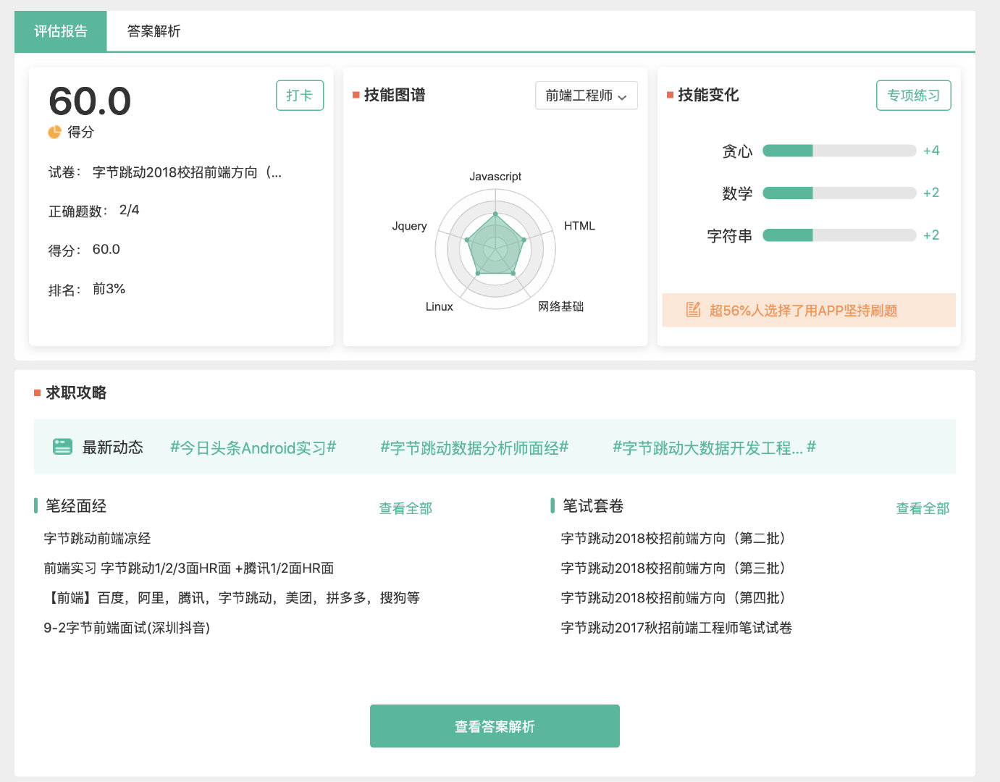

字节跳动的算法面试题是什么难度？
字节跳动的算法面试题是什么难度？
由于 lucifer 我是一个小前端， 最近也在准备写一个《前端如何搞定算法面试》的专栏，因此最近没少看各大公司的面试题。都说字节跳动算法题比较难，我就先拿 ta 下手，做了几套 。这次我们就拿一套 2018 年的前端校招（第四批）来看下字节的算法笔试题的难度几何。地址：https://www.nowcoder.com/test/8536639/summary
实际上，这套字节的前端岗位笔试题和后端以及算法岗位的笔试题也只有一道题目（红包的设计题被换成了另外一个设计题）不一样而已，因此也不需要担心你不是前端，题目类型和难度和你的岗位不匹配。
这套题一共四道题， 两道问答题， 两道编程题。
其中一道问答题是 LeetCode 426 的原题，只不过题型变成了找茬（改错）。可惜的是 LeetCode 的 426 题是一个会员题目，没有会员的就看不来了。不过，剑指 Offer 正好也有这个题，并且力扣将剑指 Offer 全部的题目都 OJ 化了。 这道题大家可以去 https://leetcode-cn.com/problems/er-cha-sou-suo-shu-yu-shuang-xiang-lian-biao-lcof 提交答案。简单说一下这个题目的思路，我们只需要中序遍历即可得到一个有序的数列，同时在中序遍历过程中将 pre 和 cur 节点通过指针串起来即可。
另一个问答是红包题目，这里不多说了。我们重点看一下剩下两个算法编程题。

两个问答题由于不能在线判题，我没有做，只做了剩下两个编程题。
球队比赛
第一个编程题是一个球队比赛的题目。
题目描述
有三只球队，每只球队编号分别为球队 1，球队 2，球队 3，这三只球队一共需要进行 n 场比赛。现在已经踢完了 k 场比赛，每场比赛不能打平，踢赢一场比赛得一分，输了不得分不减分。已知球队 1 和球队 2 的比分相差 d1 分，球队 2 和球队 3 的比分相差 d2 分，每场比赛可以任意选择两只队伍进行。求如果打完最后的 (n-k) 场比赛，有没有可能三只球队的分数打平。
思路
假设球队 1，球队 2，球队 3 此时的胜利次数分别为 a，b，c，球队 1，球队 2，球队 3 总的胜利次数分别为 n1，n2，n3。
我一开始的想法是只要保证 n1，n2，n3 相等且都小于等于 n / 3 即可。如果题目给了 n1，n2，n3 的值就直接：
<pre class="calibre18">```
print(n1 == n2 == n3 == n / 3)
可是不仅 n1，n2，n3 没给， a，b，c 也没有给。
实际上此时我们的信息仅仅是：